Quickstart Tutorial¶
Once GeoCat Bridge has been installed, the first thing you might want to do is publish some layers!
This quickstart tutorial will walk you through the process of publishing a QGIS map layers to GeoServer.
Setting up a GeoServer connection¶
Before you can publish anything to GeoServer, Bridge needs to know where your stuff needs to go. Therefore, you will have to configure a GeoServer connection. This typically only needs to be done once, as Bridge will store all server configurations for future use.
Step 1: show Bridge dialog¶
Find and click the Bridge button in the QGIS Web Toolbar:
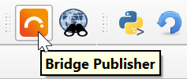
The Bridge dialog should now appear. First-time users may see the About panel, while others will probably see the Publish panel instead.
Step 2: go to Connections panel¶
Click on Connections in the left sidebar. If no servers have been configured so far, this should show the following panel:
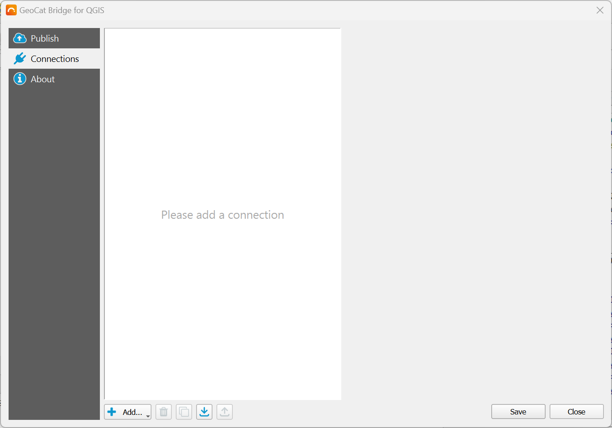
Step 3: add new connection¶
Click the Add... button on the lower left corner of the Connections panel and select GeoServer:
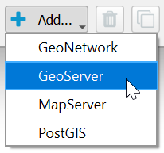
This should create a new GeoServer configuration that will look this this:
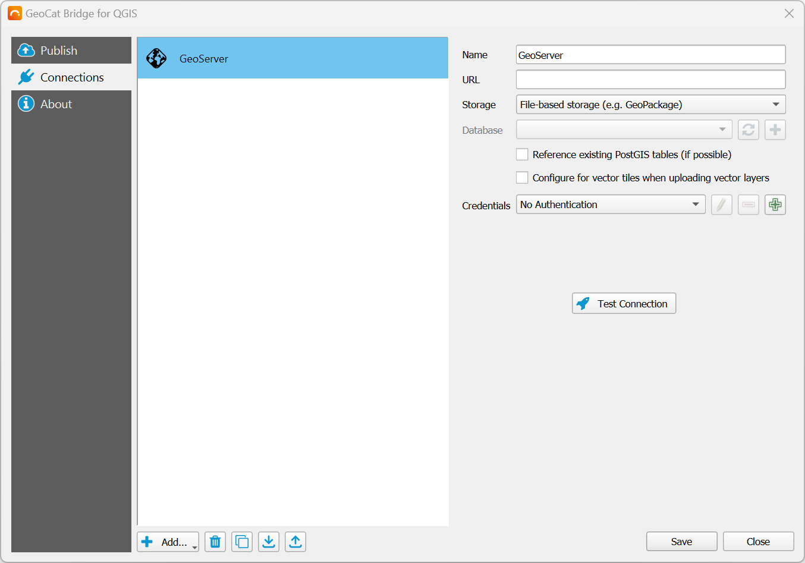
Step 4: set name and address¶
Give the configuration a Name or use the suggested one. If you are planning on using multiple configurations, you may want to set a proper name so you can easily identify the configuration in the Publish panel later on.
Now, specify the URL (host address) to the GeoServer instance you wish to publish to. For example, for a local GeoServer installation, fill in something like this:
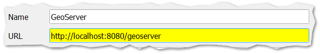
For remote connections, you should probably use a secure connection starting with https://.
The port can likely be omitted in this case, unless the remote connection does not use port 80.
Step 5: confirm storage type¶
For this quickstart tutorial, we will publish data to a file-based datastore. This means that Bridge will upload a GeoPackage, Shapefile, or GeoTIFF file to GeoServer and GeoServer will directly use that file to create a WMS layer for it. The data will not be stored in a database for example.
When you add a new GeoServer configuration, the Storage setting is already set to File-based storage (e.g. GeoPackage), so we do not need to change anything here.
Step 6: add new credentials¶
In order to actually establish a connection, we need to authenticate ourselves with GeoServer. To do that, add new Credentials by clicking the button:
If you have already set GeoServer credentials before, you may select the right one from the dropdown instead and skip the next step.
Step 7: authentication details¶
After you clicked the button in the previous step, the Authentication dialog will pop up.
For the authentication mechanism, we will use Basic authentication. This is the default and works well with GeoServer. It also is the only mechanism that Bridge currently supports.
Now specify any Name (to identify your credential settings) and set the Username and Password for your GeoServer user:
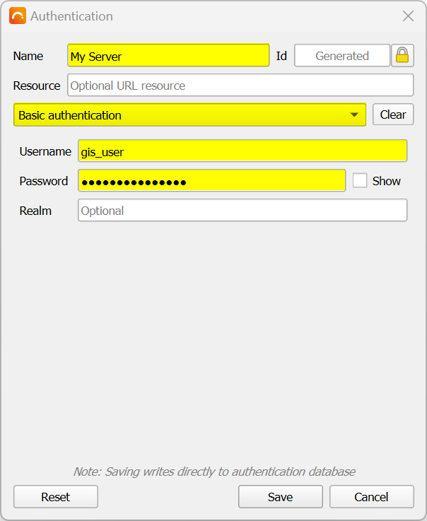
Click Save when you're done. The Credentials configuration should now be set:
Step 8: test connection¶
Now, click the Test Connection button to make sure that Bridge can connect to GeoServer.
If the connection was successful, you should see a green message bar at the top. If the connection was not successful, you should see a red error message, that will likely tell you what went wrong.
Step 9: save configuration¶
Save your GeoServer configuration by clicking the Save button in the lower right corner of the Connections panel.
You are now ready to publish some layers!
Publishing QGIS layers to GeoServer¶
For this guide, we are using Natural Earth data, but you can of course use any data you like.
Before you can publish something, make sure that there are some publishable layers in your map and that your QGIS project is saved to disk if you have been creating a new map from scratch. Bridge currently uses the project name as the GeoServer workspace name to publish to, but this behavior may change in the future.
Step 1: open publish dialog¶
Now, click the Bridge button in the QGIS Web Toolbar:
The Bridge dialog should appear, showing the Publish panel and all publishable layers. For example:
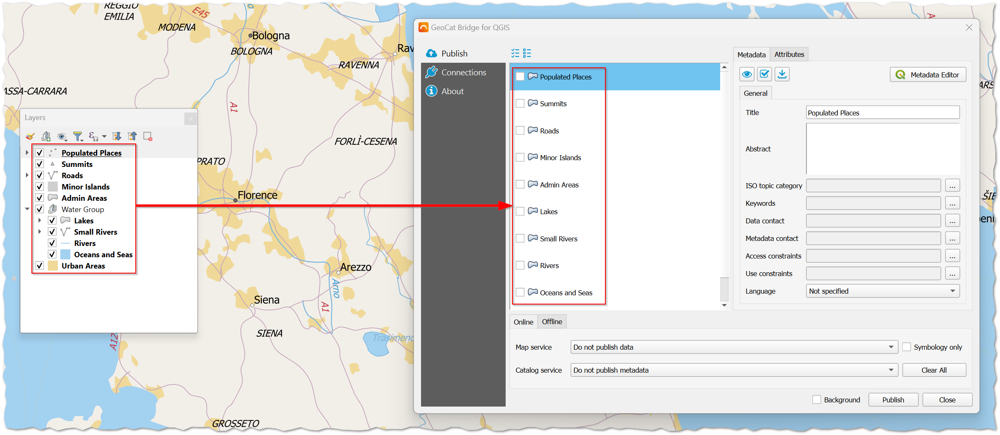
Note that Bridge shows a "flat" list of layers: group layers are not shown here. However, Bridge will automatically create GeoServer group layers for all published layers that have been grouped in QGIS.
Step 2: select target server¶
In the Online tab at the bottom of the Publish panel, set the Data server to the GeoServer configuration that you wish to publish to:
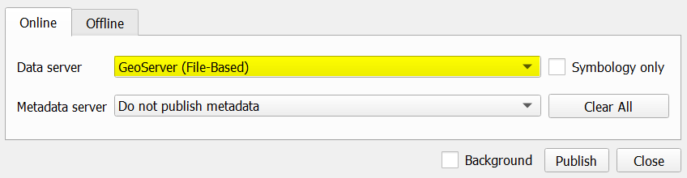
The Data server list should display all the names of the configurations that you created in the Connections panel. If you just got started, then there will likely only be 1 item in this list.
Step 3: select layers¶
Now it is up to you to decide which layers you wish to publish. You can uncheck the layers you do not wish to publish, or simply publish all of them (default).
Optionally, you can click on a layer and set the Title or Abstract in the Metadata tab. These fields will be published to the GeoServer workspace layer. Other metadata will be ignored in this case, but can be published to a catalogue service like GeoNetwork if needed. Also note that if you do not set the Title, the layer name as shown in the QGIS Table of Contents is used.
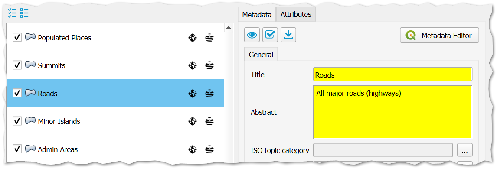
Tip
If you have vector layers with lots of attributes, but you only need to publish a couple of these fields, you can select the applicable layer and click on the Attributes tab. Here you can uncheck all attributes that do not need to be published, which will save some storage space on the GeoServer side and reduce the time it will take Bridge to transfer the data.
Step 4: start publish process¶
For this tutorial, we will simply go ahead and publish all layers. As noted in the previous step, this is the default.
Click the Publish button in the lower right corner of the Bridge dialog to start the publication process. During this process, a progress dialog should appear:
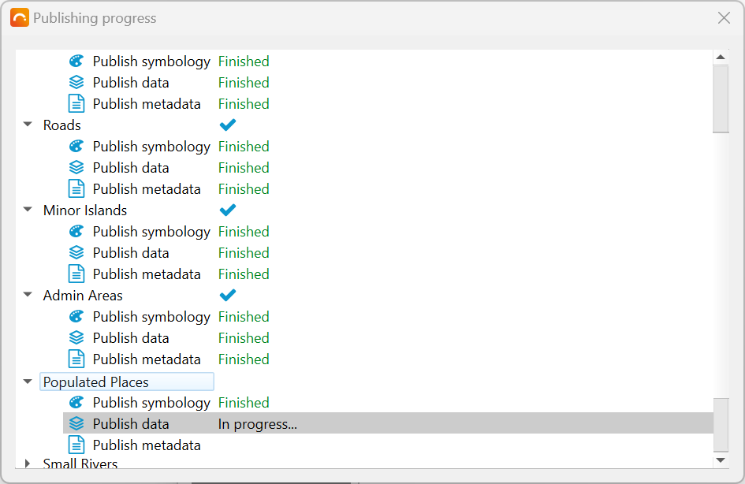
Note
For you (the user) it may seem that Bridge does not treat raster layers differently from vector layers. Under the hood however, Bridge will always publish raster data to a file-based GeoServer datastore as GeoTIFF files. Vector data on the other hand will be published in the original format (Shapefile, GeoPackage) if possible, and can also be imported into a PostGIS datastore.
Step 5: review results¶
Once the publish process has completed, a result dialog should appear:
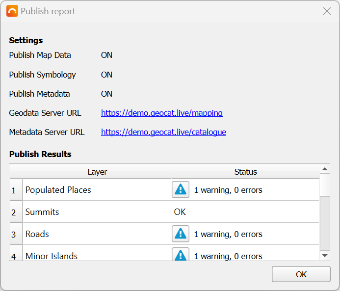
If there are any errors or warnings, these are shown in the Status column of the published layer list. Click on the tiny buttons to get more details about the issue(s). If there are no issues, it should say OK next to each layer.
Close the result dialog once you finished reviewing.
Note
An issue that often occurs is a warning that the layer name has been renamed by Bridge, due to some unsupported characters on the GeoServer side. This often happens when there are spaces in the name. If this is the case, then you can safely ignore the warning. Also note that this won't affect the layer title.
Step 6: WMS preview¶
Bridge should now update the Publish panel and display a GeoServer icon behind each successfully published layer. If you hover over the icon using your mouse, it should also tell you which server configuration was used.
If you wish to view a browser-based preview of the GeoServer WMS, you can right-click the GeoServer icon and choose either View all WMS layers to preview all layers (i.e. the entire map) in your GeoServer workspace, or choose View this WMS layer to only preview the selected layer:
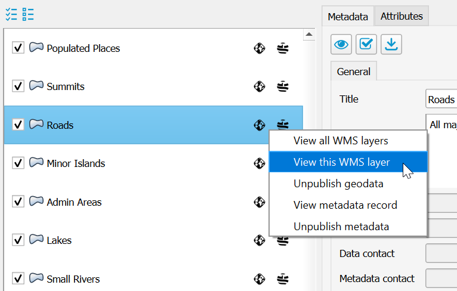
The OpenLayers preview for all layers could for example look like this:
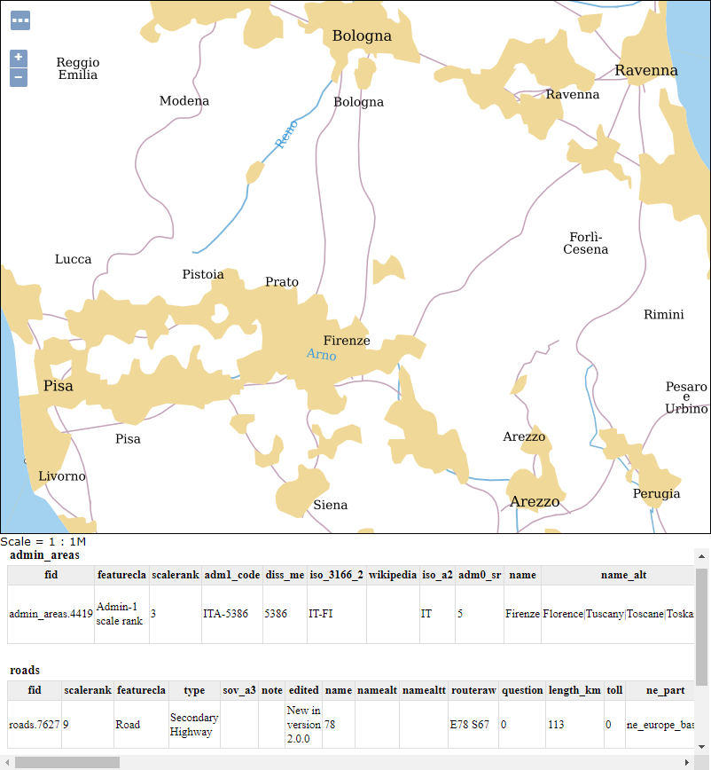
Clicking on any item on the map will display its (published) attributes at the bottom.
Note
Due to the dynamic preview, the layer order may be slightly different than in QGIS. Label fonts may also differ from what you see in QGIS if the font is not available on the GeoServer side.